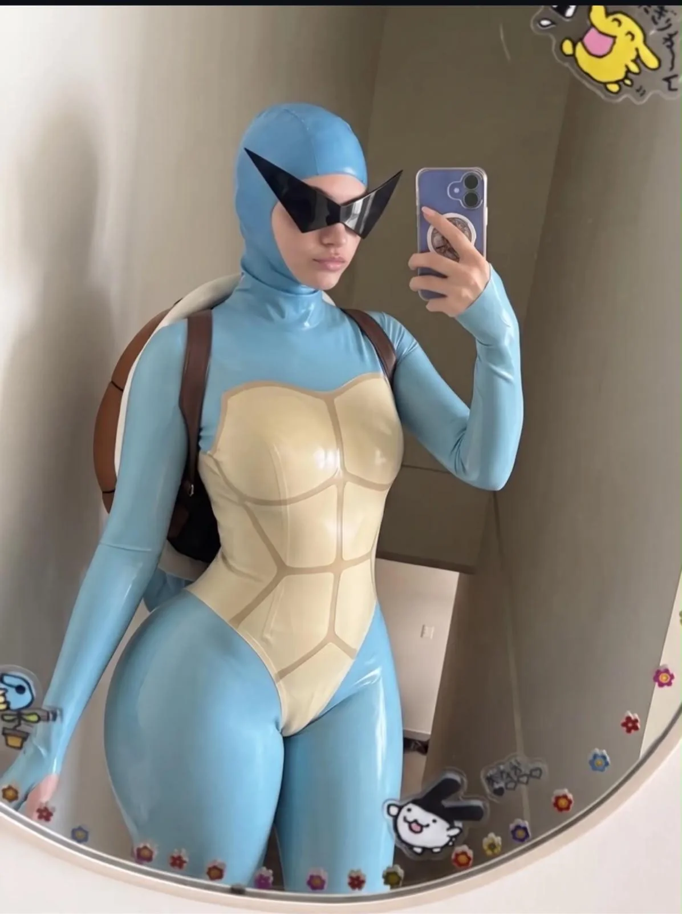
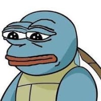

꼬부기단 코스프레
댓글

해수스파우팅도 쏠 듯.
참고로 일본어 원문은 시오후키임.
바지락조개
바람넣었냐
물대포 반대로 할거 같네
센조이 ㄷㄷ
알 많이 낳겠다
꼬북꼬북!
가입하려면 어디로 가야해?
바지락조개!


거북왕 마렵네


해수스파우팅도 쏠 듯.
참고로 일본어 원문은 시오후키임.
바지락조개
바람넣었냐
물대포 반대로 할거 같네
센조이 ㄷㄷ
알 많이 낳겠다
꼬북꼬북!
가입하려면 어디로 가야해?
바지락조개!
거북왕 마렵네
하이드로펌프 쏘겠네